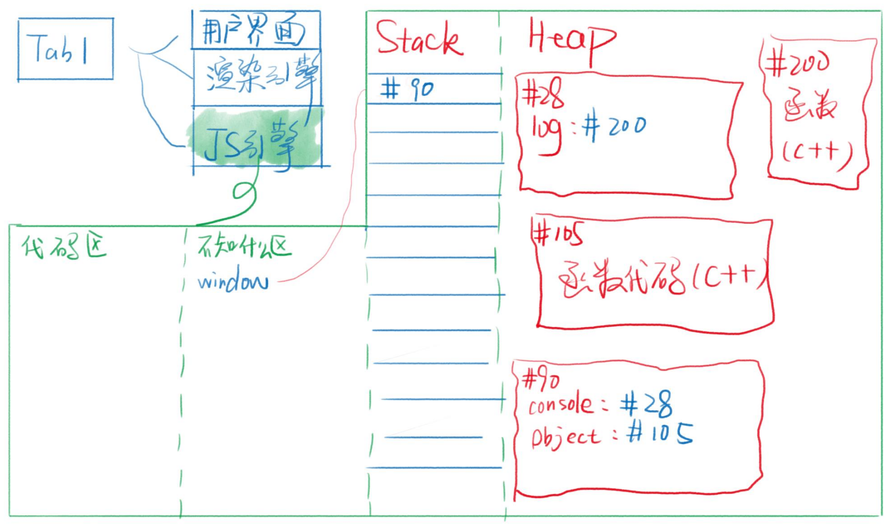

内存图和JS世界
英语小课堂
| 英语 | 翻译 | 英语 | 翻译 |
|---|---|---|---|
| Operating System | 操作系统简称OS | kernel | 内核 |
| runtime | 运行时（需要的东西） | compile | 编译 |
| environment | 环境简称env | memory | 记忆 |
| person | 一个人 | people | 一群人 |
内存
- 一切都运行在内存里
- 当我们点下开机键的时候:主板就会通电，开始读取固件，这里个固件可以理解成硬盘，硬盘里面写着开机程序，硬盘就会把操作系统加载到内存中运行，这样我们开机就可以看到我们安装的操作系统。
- 当我们打开chrome的时候:硬盘就会运行
chrome.exe，然后放到内存里面加载，并且开启chrome的进程，作为主进程。主进程又会开启很多一些辅助进程，比如网络服务、GPU加速等等。
浏览器的功能
- 发起请求，下载
HTML，解析HTML，当遇到CSS连接，又请求下载CSS，解析CSS并且渲染界面，下载JS，解析JS、执行JS等等。我的理解是当浏览器在解析HTML的时候，遇到链接就请求和下载链接，可以是CSS也可以是JS。先到谁就会先下载谁并且解析。 - 功能模块:用户界面、渲染引擎、JS引擎、储存等等,这些功能模块一般各处于不同的线程上，线程是比进程还要小的单位。如果进程是车间，那么线程就是车间里面的流水线。
JS引擎
- chrome用的是V8引擎，V8是用C++编写的，速度特别快，Ryan基于V8引擎开发出了
node.js，有了node.jsJS代码就可以不单单只是在浏览器上运行了，还可以在脱离浏览器之外的地方运行。 - JS引擎的主要功能
- 编译：把JS代码编译为机器能执行的字节或机器码
- 优化：改写代码，使其更高效
- 执行: 执行上面的字节码或者机器码
- 把JS用完的内存回收，方便之后再次使用
内存图
上图红色区域是用来存放数据的，红色区域并不存变量名，变量名是存在不知道什么区，因为每个浏览器存变量名的区域的分配规则并不一样，所以就叫不知道上面区。
注意：红色区域分为stack栈和Heap堆他们的特点是Stack区是顺序存放的。Heap区是随机存放的.
规律
- 数据分两种：对象和非对象
- 非对象都在存在
Stack区比如数字、字符串 - 对象都存在
Heap区
如果存的是一个对象，在Heap区里面就随机开辟一个地址，把对象存好，然后把位置的编号，存到Stack区.这样以后要在对象里面加东西或者删除东西，就会变得很高效。如果把对象存在Stack区,因为Stack区是顺序存放的，如果要在对象里面加一个东西，就会把该对象后面的所有东西，都“挪位置”。这样就会变的很低效.
对象被篡改
1
2
3
4var person = {name:'frank'}
var person2 = person
person2.name = ‘ryan’
console.log（person.name）// ‘ryan’因为person和person2都指
Heap区里面的同一个位置，现在person2改变了name的值，penson.name的值也会跟着一起改变，因为他们指向同一个对象位置当我们打开浏览器的时候，浏览器的内存图是这样的
当我们打开浏览器的时候，浏览器就为我们准备好了window，他们上面很多属性比如
console``Object``Array等等，是的console.log并不是JS里面的属性，而是浏览器提供给我们的。
上图里面的console和console对象并没有多大的关系，console是存在window上的一个名字,它指向一个地址，这个地址才是console对象原型
以下只是以我现在的知识理解的原型，不知道理解对对了没有。
万物皆对象不管是数组、函数都可以理解成是对象。挂载window上的Object和Array他们都有一个属性叫做prototype里面存着对象和数组的共有属性。当我们生成一个空对象的时候，其实里面并没有任何属性，但是我们却可以使用toStrong这个属性，是因为每个对象和数组都有一个属性proto，里面存着他们各自的共有属性。而且我们还不能串改共有属性，因为串改只能改到本身，而改不到proto。但是我们读的话，就可以读到proto里面的属性。万物皆对象，当数组读取一个对象的属性时候，其实他的proto里面是没有这个属性的，他的proto只存着数组的共有属性，但是数组的prototype里面也有proto它里面的指向，是指向对象的共有属性。对象也有proto，但是他是所有人的祖先，所以对象里面的proto什么都没有。
根据下面两张图理解JS里的原型
资料参考：饥人谷
（完）